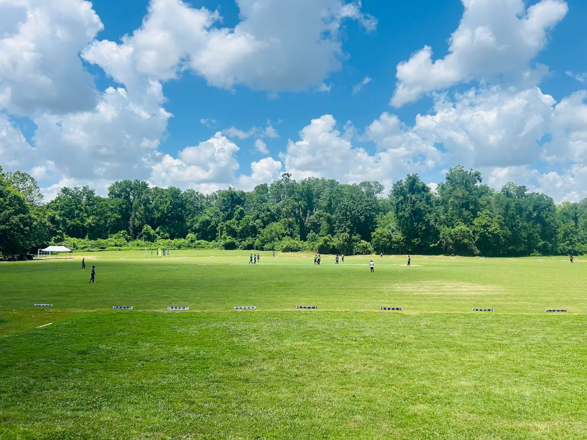
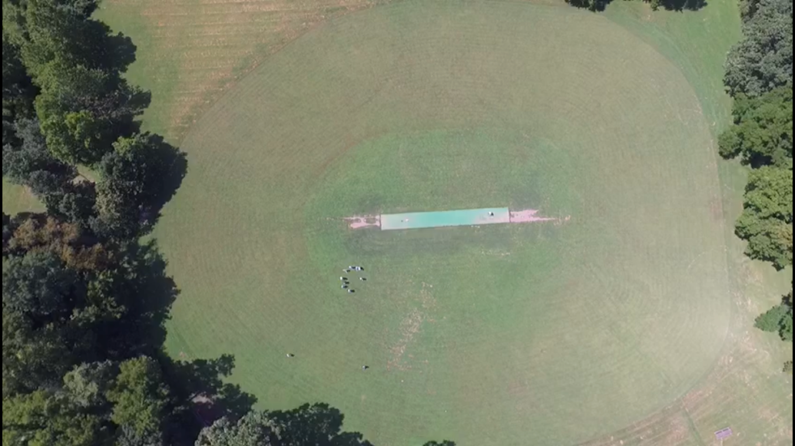
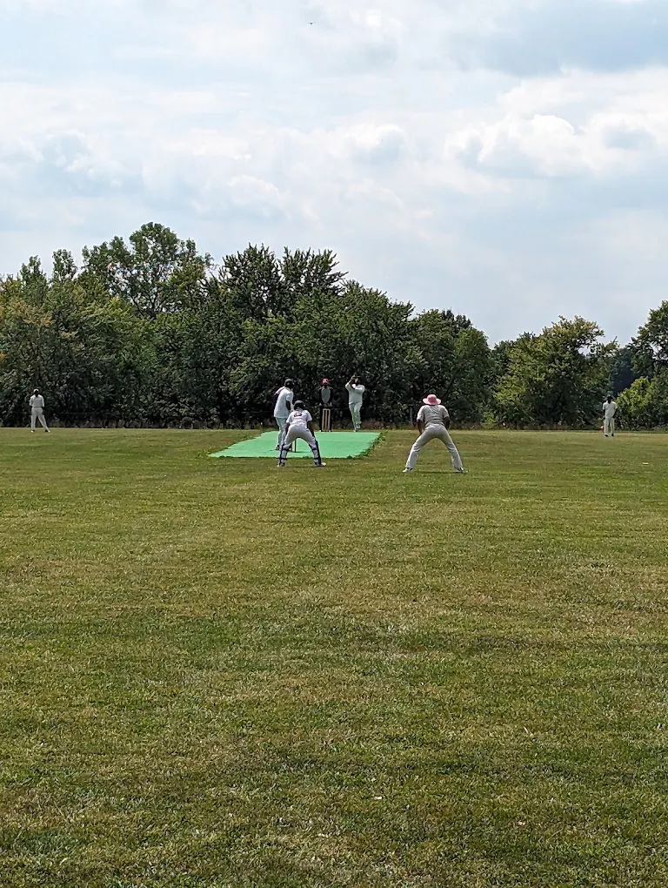
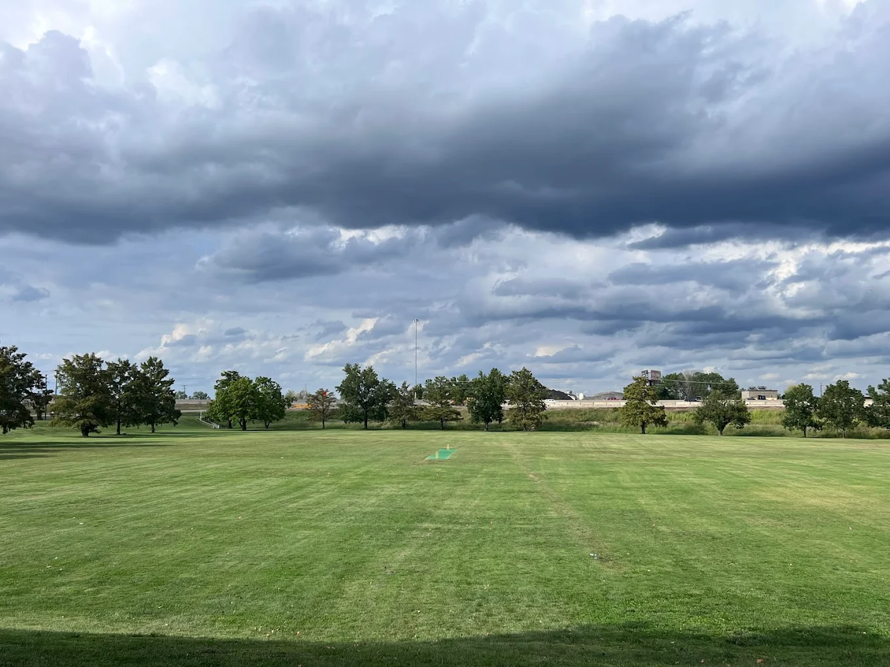
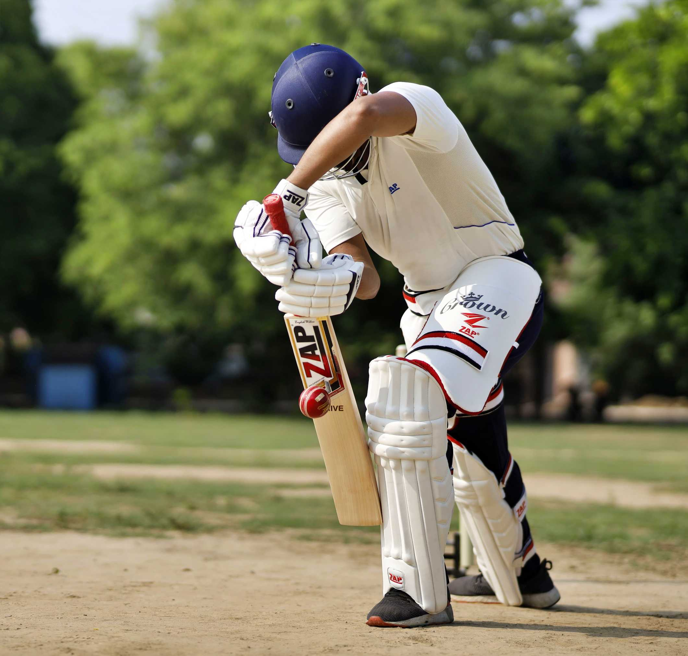
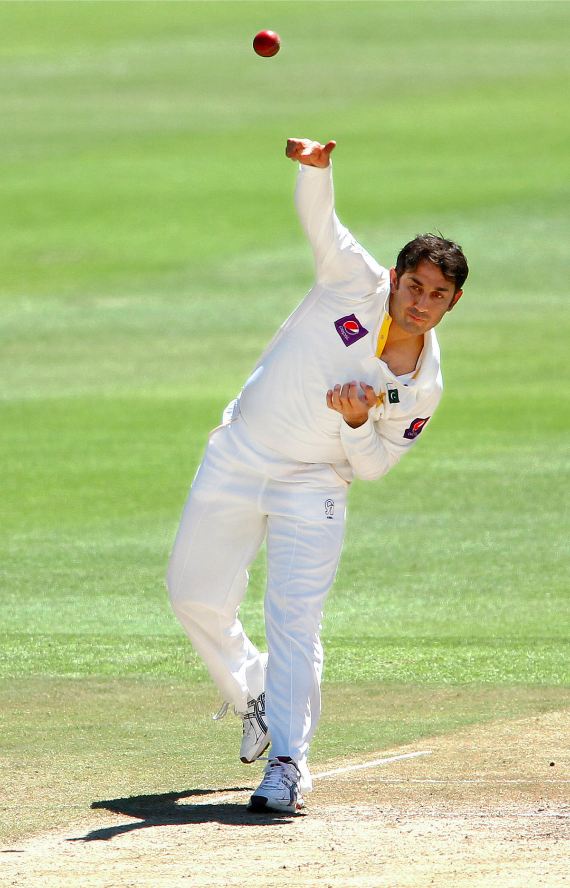

Minor Park
Our main home ground featuring a wide open outfield, tree-lined boundaries, and plenty of space for multiple matches on game day.
KANSAS CITY'S HOME FOR CRICKET
The Midwest Cricket League brings together players from across Kansas City for hardball cricket — from weekend warriors to seasoned competitors. Whether you've played your whole life or just picked up a bat, there's a team for you.
Take a look at the groundsThe Midwest Cricket League was started in 2001 by a group of college students in Kansas City who were frustrated by the lack of organized cricket in the area.
What began as a small pickup league has grown into one of the most established community cricket organizations in the Midwest.
Today the league runs multiple seasons each year with teams competing in hardball T20 formats across grounds throughout the Kansas City metro.

Take a look at the iconic grounds our league has used for the past two decades

Our main home ground featuring a wide open outfield, tree-lined boundaries, and plenty of space for multiple matches on game day.

Where the action gets up close. Stocksdale's shorter boundaries and green wicket strip make for fast-paced, exciting matches every weekend.

A wide open ground with a well-kept outfield and long boundaries. Auburndale gives batsmen room to play big shots and fielders plenty of ground to cover. Also one of the slowest grounds out of the three.
New to cricket? No problem. Here are the basics you need to know before stepping onto the pitch.

The batsman's job is to score runs by hitting the ball and running between the wickets. Each run back and forth counts as one run. Hit the ball to the boundary along the ground for an automatic four runs, or clear the boundary in the air for six.

The bowler delivers the ball toward the batsman with a straight arm, trying to hit the wickets or force a mistake. Bowlers use pace, swing, and spin to outsmart the batsman. Each bowler delivers six balls per over.
The fielding team works together to stop runs and take catches. A caught ball means the batsman is out. Fielders are placed strategically around the ground to cut off shots and create pressure.
Our league runs multiple formats throughout the year
| Tournament | Format | Overs | Season | Teams | Divisions | Ball |
|---|---|---|---|---|---|---|
| MWCL T30 League | T30 | 30 | April – July | 12+ | A & B | Red |
| MWCL T20 League | T20 | 20 | July – September | 12+ | A & B | White |
| MWCL T10 League | T10 | 10 | September – October | 6 | A | White |